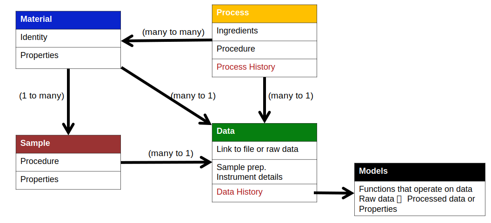
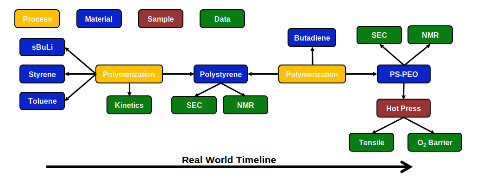
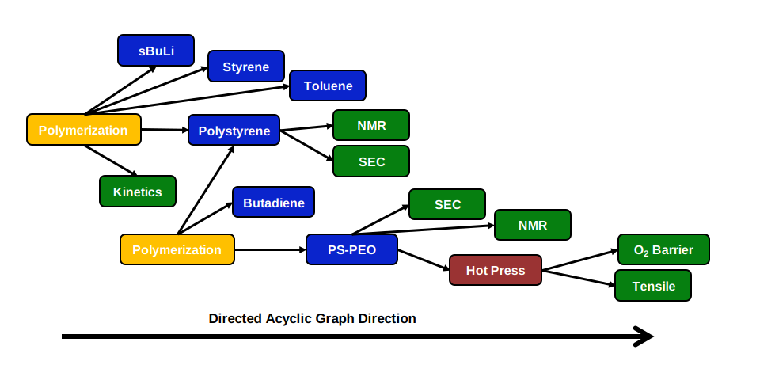
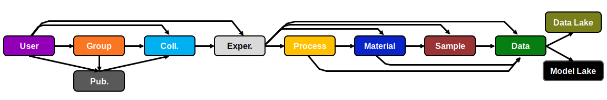

How does it work?¶
Data Schema¶
The data schema consists of 4 main nodes:
- Material: contains identity and property data for a chemical
- Process: contains ingredient list, quantities, and procedure information
- Sample: contains procedure and property information
- Data: contains data related to raw or processed data
These 4 nodes contain all the relevant polymer information. The fifth node 'models' contains functions which transform raw data to processed data or properties.

To show how the data schema can be implemented, we will go through the anionic synthesis of a polystyrene, polybutadiene block copolymer through sequential addition of monomers. We will describe the implementation from the perspective of the real world experiment timeline as that is likely to be the most intuitive workflow.
The data schema begins with the definition of material nodes. These first material nodes are the ingredients for the process node. This will be secbuLi, styrene, and toluene in our example. These materials nodes will contain information such as name, SMILES string, CAS number, and property information (molecular weight, boiling point, etc.) The second node to be defined will be a process node. In this case, it will be a polymerization node. The polymerization node will contain links to those initial material nodes as well as the quantities of each material used in the polymerization. The polymerization node will also contain details for the process in the form of a paragraph, or a list of process parameters. For the anionic polymerization, this can be details about the order of addition of the chemicals, reaction time, temperature, etc. In the case when data is taken about a process, a link to data node can be made. Something like polymerization kinetics where concentration or MW is monitored over time. The third node to be defined is another material node, or product of the process. Polystyrene in this case. The process node will link to this product material node. Any characterization data from aliquots can be added through a data node. The material node will link to the relevant data nodes. In our example, SEC raw data or NMR spectra can be found in the data nodes, while the calculated values like Mn, Mw, Mw/Mn, etc. would be found in the property section of the polystyrene node.
The synthesis for the second block, polybutadiene, continues with the definition of the butadiene material node. This can be followed by the definition of a second polymerization node which will point to the product of the whole process, polystyrene-polybutadiene block copolymer. Similar to the polystyrene characterization, the SEC and NMR data can be placed into data nodes. With this final target material made additional material studies, like tensile testing or oxygen barrier properties, may be done. In this case, there may be some material preparation steps such as hot pressing the sample into a dog bone. This can be placed into a sample node. This sample node contains the material preparation steps and any characterization data that occurred on the sample.

We can also visualize the exact same example in the context of a direct acyclic graph.

Data Model¶
The data model provides a specific implementation of the data schema, and additional features. In particular, it adds several organizational nodes:
- User: contains information about an individual using the database
- Group: contains information about group and ownership of collections and experiments lies with groups
- Publication: contains a collections which embodies a literature publication
- Collection: are groups of experiments or other collections
- Experiment: are a set of Process, Material, Sample, Data nodes
It also adds to locations to handle data and models:
- Data Lake: location of all raw data files
- Model Lake: collection of data transformation and analysis tools
A new user joining the CRIPT ecosystem will result in the creation of a new user node. The user can then either create a new group or join an existing group. If a new group is formed then a new collection will be made in which the first experiment can be placed into. If a user is joining an existing group, the user will have access to all collections and embedded experiments the group has ownership of. Collections can be turned into publications which removes all write capabilities for any embedded document.
